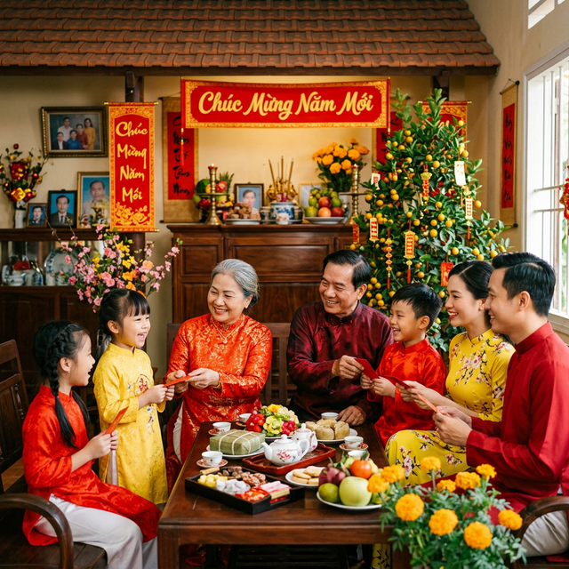

📍 Vị Trí Địa Lý
Sóc Trăng là một tỉnh ven biển nằm trong vùng đồng bằng sông Cửu Long, Việt Nam. Vùng đất này nằm ở hạ lưu Nam sông Hậu, là nơi gắn liền với nhịp sống nông nghiệp lúa nước và những nét sinh hoạt miệt vườn mộc mạc đặc trưng.
Với bờ biển dài hơn 72 km, Sóc Trăng có tiềm năng lớn về nuôi trồng và đánh bắt thủy sản, đồng thời sở hữu cảnh quan thiên nhiên đa dạng từ đồng lúa bao la đến những cánh rừng ngập mặn yên tĩnh.

🤝 Con Người Sóc Trăng
Người dân Sóc Trăng nổi tiếng hiền hòa, chân chất và vô cùng hiếu khách. Sóc Trăng là nơi hội tụ của ba dân tộc anh em cùng sinh sống hòa thuận qua nhiều thế hệ.
Chính sự đa dạng sắc tộc đã tạo nên một bản sắc văn hóa phong phú, đặc sắc — thể hiện rõ nhất qua ngôn ngữ, ẩm thực, kiến trúc và những dịp Lễ Tết đặc biệt.

Ba Dân Tộc Anh Em
Sự giao thoa ba nền văn hóa tạo nên bản sắc Sóc Trăng độc đáo không nơi nào có
Người Kinh
Chiếm đa số dân số, gắn liền với nền nông nghiệp lúa nước. Đón Tết với hoa mai vàng, bánh tét và câu đối đỏ treo trước cửa.
Người Hoa
Giỏi buôn bán, nổi tiếng với đặc sản bánh Pía và lễ hội Nguyên Tiêu rực rỡ đèn lồng đỏ suốt đêm tháng Giêng.
Người Khmer
Gìn giữ nền văn hóa độc đáo qua các chùa chiền lộng lẫy, điệu múa Khmer và lễ hội đua ghe Ngo rộn ràng.
"Tết Sóc Trăng không chỉ là một ngày lễ — đó là khoảnh khắc cả ba dòng văn hóa Kinh, Hoa, Khmer cùng hòa điệu trong tiếng pháo, tiếng nhạc ngũ âm và mùi thơm bánh tét nghi ngút."— Cảm nhận của người con Sóc Trăng xa quê
🎊 Tết Sóc Trăng Có Gì Đặc Biệt?
So với các tỉnh miền Bắc chuộng hoa đào và bánh chưng vuông vức, Tết Sóc Trăng ngập tràn sắc vàng của hoa mai và mùi thơm của bánh tét. Sự pha trộn văn hóa ba dân tộc tạo ra một mùa Tết hoàn toàn khác biệt:
- 🌼 Hoa mai vàng nở rực khắp ngõ nhà
- 🥮 Bánh Pía thơm ngon đặc sản người Hoa
- 🎵 Nhạc cụ ngũ âm Khmer tại các chùa lớn
- 🚣 Lễ hội đua ghe Ngo rộn ràng sông nước
- 🏮 Đèn lồng đỏ lung linh trên phố chợ
- 🙏 Đi chùa Giao Thừa giao thoa ba tín ngưỡng